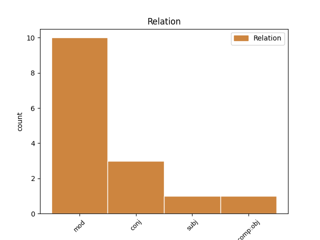
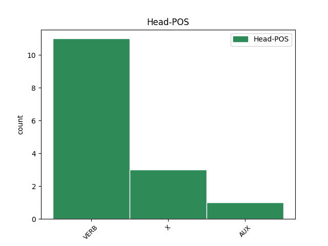
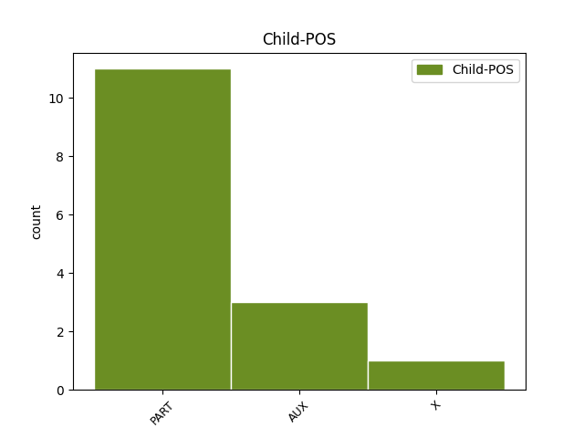

Distribution of features within this leaf



Agreement Rules sorted by frequency.
- When the dependent token is the modifer(mod) of the head token, and the head token is VERB and the dependent token is PART.
1 Ná ná PART Vb Mood=Imp|PartType=Vb 2 mod _ _
2 déan déan VERB VTI Mood=Imp|Number=Sing|Person=2 0 _ _ _
3 dearmad _ _ _ _ 0 _ _ _
4 gurb _ _ _ _ 0 _ _ _
5 é _ _ _ _ 0 _ _ _
6 John _ _ _ _ 0 _ _ _
7 Edwards _ _ _ _ 0 _ _ _
8 a _ _ _ _ 0 _ _ _
9 thraenálaí _ _ _ _ 0 _ _ _
10 , _ _ _ _ 0 _ _ _
11 fear _ _ _ _ 0 _ _ _
12 atá _ _ _ _ 0 _ _ _
13 ina _ _ _ _ 0 _ _ _
14 shaineolaí _ _ _ _ 0 _ _ _
15 ag _ _ _ _ 0 _ _ _
16 ullmhú _ _ _ _ 0 _ _ _
17 capall _ _ _ _ 0 _ _ _
18 don _ _ _ _ 0 _ _ _
19 Cheltenham _ _ _ _ 0 _ _ _
20 Festival _ _ _ _ 0 _ _ _
21 ( _ _ _ _ 0 _ _ _
22 NH _ _ _ _ 0 _ _ _
23 ) _ _ _ _ 0 _ _ _
24 . _ _ _ _ 0 _ _ _
1 Ná _ _ _ _ 0 _ _ _
2 dein _ _ _ _ 0 _ _ _
3 so _ _ _ _ 0 _ _ _
4 agus _ _ _ _ 0 _ _ _
5 ná ná PART Vb Mood=Imp|PartType=Vb|Polarity=Neg 6 mod _ _
6 dein dein X CM Dialect=Munster|Mood=Imp|Number=Sing|Person=2|Polarity=Neg 0 _ _ _
7 súd _ _ _ _ 0 _ _ _
8 . _ _ _ _ 0 _ _ _
1 Sheoladar _ _ _ _ 0 _ _ _
2 an _ _ _ _ 0 _ _ _
3 cóta _ _ _ _ 0 _ _ _
4 leis _ _ _ _ 0 _ _ _
5 na _ _ _ _ 0 _ _ _
6 muinchillí _ _ _ _ 0 _ _ _
7 fada _ _ _ _ 0 _ _ _
8 ar _ _ _ _ 0 _ _ _
9 ais _ _ _ _ 0 _ _ _
10 le _ _ _ _ 0 _ _ _
11 tabhairt _ _ _ _ 0 _ _ _
12 dá _ _ _ _ 0 _ _ _
13 n-athair _ _ _ _ 0 _ _ _
14 , _ _ _ _ 0 _ _ _
15 leis _ _ _ _ 0 _ _ _
16 an _ _ _ _ 0 _ _ _
17 teachtaireacht _ _ _ _ 0 _ _ _
18 : _ _ _ _ 0 _ _ _
19 ' _ _ _ _ 0 _ _ _
20 Fuaireamar _ _ _ _ 0 _ _ _
21 é _ _ _ _ 0 _ _ _
22 seo _ _ _ _ 0 _ _ _
23 ; _ _ _ _ 0 _ _ _
24 féach _ _ _ _ 0 _ _ _
25 an is AUX Cop Mood=Int|Tense=Pres|VerbForm=Cop 0 _ _ _
26 é _ _ _ _ 0 _ _ _
27 cóta _ _ _ _ 0 _ _ _
28 do _ _ _ _ 0 _ _ _
29 mhic _ _ _ _ 0 _ _ _
30 é _ _ _ _ 0 _ _ _
31 nó _ _ _ _ 0 _ _ _
32 nach is AUX Cop Mood=Int|Polarity=Neg|Tense=Pres|VerbForm=Cop 25 conj _ _
33 é _ _ _ _ 0 _ _ _
34 . _ _ _ _ 0 _ _ _
1 Ná _ _ _ _ 0 _ _ _
2 dein dein X CM Dialect=Munster|Mood=Imp|Number=Sing|Person=2|Polarity=Neg 0 _ _ _
3 so _ _ _ _ 0 _ _ _
4 agus _ _ _ _ 0 _ _ _
5 ná _ _ _ _ 0 _ _ _
6 dein dein X CM Dialect=Munster|Mood=Imp|Number=Sing|Person=2|Polarity=Neg 2 conj _ _
7 súd _ _ _ _ 0 _ _ _
8 . _ _ _ _ 0 _ _ _
Disagree Examples:
1 Ar _ _ _ _ 0 _ _ _
2 fhágaint _ _ _ _ 0 _ _ _
3 slán _ _ _ _ 0 _ _ _
4 agus _ _ _ _ 0 _ _ _
5 beannacht _ _ _ _ 0 _ _ _
6 age _ _ _ _ 0 _ _ _
7 cé _ _ _ _ 0 _ _ _
8 na _ _ _ _ 0 _ _ _
9 Coise _ _ _ _ 0 _ _ _
10 an _ _ _ _ 0 _ _ _
11 tráthnóna _ _ _ _ 0 _ _ _
12 aoibhinn _ _ _ _ 0 _ _ _
13 caithiseach _ _ _ _ 0 _ _ _
14 Domhnaigh _ _ _ _ 0 _ _ _
15 seo _ _ _ _ 0 _ _ _
16 dhúinn _ _ _ _ 0 _ _ _
17 , _ _ _ _ 0 _ _ _
18 agus _ _ _ _ 0 _ _ _
19 agena _ _ _ _ 0 _ _ _
20 a _ _ _ _ 0 _ _ _
21 raibh _ _ _ _ 0 _ _ _
22 do _ _ _ _ 0 _ _ _
23 dhaoine _ _ _ _ 0 _ _ _
24 ina _ _ _ _ 0 _ _ _
25 seasamh _ _ _ _ 0 _ _ _
26 ann _ _ _ _ 0 _ _ _
27 , _ _ _ _ 0 _ _ _
28 cé _ _ _ _ 0 _ _ _
29 go _ _ _ _ 0 _ _ _
30 raibh _ _ _ _ 0 _ _ _
31 cuid _ _ _ _ 0 _ _ _
32 mhaith _ _ _ _ 0 _ _ _
33 ann _ _ _ _ 0 _ _ _
34 san _ _ _ _ 0 _ _ _
35 am _ _ _ _ 0 _ _ _
36 gcéanna _ _ _ _ 0 _ _ _
37 , _ _ _ _ 0 _ _ _
38 ní _ _ _ _ 0 _ _ _
39 raibh _ _ _ _ 0 _ _ _
40 cuma _ _ _ _ 0 _ _ _
41 na _ _ _ _ 0 _ _ _
42 hainnise _ _ _ _ 0 _ _ _
43 ná _ _ _ _ 0 _ _ _
44 na _ _ _ _ 0 _ _ _
45 bochtanacht _ _ _ _ 0 _ _ _
46 ar _ _ _ _ 0 _ _ _
47 aon _ _ _ _ 0 _ _ _
48 duine _ _ _ _ 0 _ _ _
49 acu _ _ _ _ 0 _ _ _
50 , _ _ _ _ 0 _ _ _
51 rud _ _ _ _ 0 _ _ _
52 ná ná PART Vb Mood=Imp|PartType=Vb 53 subj _ _
53 beadh bí VERB VI Mood=Cnd 0 _ _ _
54 im _ _ _ _ 0 _ _ _
55 chumas _ _ _ _ 0 _ _ _
56 do _ _ _ _ 0 _ _ _
57 rá _ _ _ _ 0 _ _ _
58 leo _ _ _ _ 0 _ _ _
59 anois _ _ _ _ 0 _ _ _
60 dá _ _ _ _ 0 _ _ _
61 mbeinn _ _ _ _ 0 _ _ _
62 ann _ _ _ _ 0 _ _ _
63 , _ _ _ _ 0 _ _ _
64 comh _ _ _ _ 0 _ _ _
65 fada _ _ _ _ 0 _ _ _
66 lem _ _ _ _ 0 _ _ _
67 thuairim _ _ _ _ 0 _ _ _
68 . _ _ _ _ 0 _ _ _
1 Nach nach PART Vb Mood=Int|PartType=Vb|Polarity=Neg 2 mod _ _
2 bhfuil bí VERB PresInd Form=Ecl|Mood=Ind|Polarity=Neg|Tense=Pres 0 _ _ _
3 carr _ _ _ _ 0 _ _ _
4 an _ _ _ _ 0 _ _ _
5 duine _ _ _ _ 0 _ _ _
6 acu _ _ _ _ 0 _ _ _
7 . _ _ _ _ 0 _ _ _
1 Ní _ _ _ _ 0 _ _ _
2 raibh bí VERB PastInd Form=Len|Mood=Ind|Polarity=Neg|Tense=Past 0 _ _ _
3 an _ _ _ _ 0 _ _ _
4 dara _ _ _ _ 0 _ _ _
5 dóigh _ _ _ _ 0 _ _ _
6 air _ _ _ _ 0 _ _ _
7 , _ _ _ _ 0 _ _ _
8 ná _ _ _ _ 0 _ _ _
9 an _ _ _ _ 0 _ _ _
10 gual _ _ _ _ 0 _ _ _
11 a _ _ _ _ 0 _ _ _
12 chur _ _ _ _ 0 _ _ _
13 chun _ _ _ _ 0 _ _ _
14 na _ _ _ _ 0 _ _ _
15 farraige _ _ _ _ 0 _ _ _
16 , _ _ _ _ 0 _ _ _
17 sin _ _ _ _ 0 _ _ _
18 nó _ _ _ _ 0 _ _ _
19 a _ _ _ _ 0 _ _ _
20 chur _ _ _ _ 0 _ _ _
21 amach _ _ _ _ 0 _ _ _
22 san _ _ _ _ 0 _ _ _
23 Oileán _ _ _ _ 0 _ _ _
24 - _ _ _ _ 0 _ _ _
25 agus _ _ _ _ 0 _ _ _
26 nár is AUX Cop Mood=Int|Polarity=Neg|Tense=Past|VerbForm=Cop 2 conj _ _
27 mhillteanach _ _ _ _ 0 _ _ _
28 an _ _ _ _ 0 _ _ _
29 bhreab _ _ _ _ 0 _ _ _
30 é _ _ _ _ 0 _ _ _
31 an _ _ _ _ 0 _ _ _
32 áit _ _ _ _ 0 _ _ _
33 nach _ _ _ _ 0 _ _ _
34 raibh _ _ _ _ 0 _ _ _
35 fód _ _ _ _ 0 _ _ _
36 móna _ _ _ _ 0 _ _ _
37 ? _ _ _ _ 0 _ _ _
1 Sheoladar _ _ _ _ 0 _ _ _
2 an _ _ _ _ 0 _ _ _
3 cóta _ _ _ _ 0 _ _ _
4 leis _ _ _ _ 0 _ _ _
5 na _ _ _ _ 0 _ _ _
6 muinchillí _ _ _ _ 0 _ _ _
7 fada _ _ _ _ 0 _ _ _
8 ar _ _ _ _ 0 _ _ _
9 ais _ _ _ _ 0 _ _ _
10 le _ _ _ _ 0 _ _ _
11 tabhairt _ _ _ _ 0 _ _ _
12 dá _ _ _ _ 0 _ _ _
13 n-athair _ _ _ _ 0 _ _ _
14 , _ _ _ _ 0 _ _ _
15 leis _ _ _ _ 0 _ _ _
16 an _ _ _ _ 0 _ _ _
17 teachtaireacht _ _ _ _ 0 _ _ _
18 : _ _ _ _ 0 _ _ _
19 ' _ _ _ _ 0 _ _ _
20 Fuaireamar _ _ _ _ 0 _ _ _
21 é _ _ _ _ 0 _ _ _
22 seo _ _ _ _ 0 _ _ _
23 ; _ _ _ _ 0 _ _ _
24 féach féach VERB Imper Mood=Imp|Number=Sing|Person=2 0 _ _ _
25 an is AUX Cop Mood=Int|Tense=Pres|VerbForm=Cop 24 comp:obj _ _
26 é _ _ _ _ 0 _ _ _
27 cóta _ _ _ _ 0 _ _ _
28 do _ _ _ _ 0 _ _ _
29 mhic _ _ _ _ 0 _ _ _
30 é _ _ _ _ 0 _ _ _
31 nó _ _ _ _ 0 _ _ _
32 nach _ _ _ _ 0 _ _ _
33 é _ _ _ _ 0 _ _ _
34 . _ _ _ _ 0 _ _ _
1 Nach nach PART Vb Mood=Int|PartType=Vb|Polarity=Neg 2 mod _ _
2 sáfaí sáigh VERB VTI Form=Ecl|Mood=Cnd|Voice=Auto 0 _ _ _
3 le _ _ _ _ 0 _ _ _
4 sleánna _ _ _ _ 0 _ _ _
5 muid _ _ _ _ 0 _ _ _
6 , _ _ _ _ 0 _ _ _
7 nach _ _ _ _ 0 _ _ _
8 ndícheannófaí _ _ _ _ 0 _ _ _
9 le _ _ _ _ 0 _ _ _
10 claimhte _ _ _ _ 0 _ _ _
11 muid _ _ _ _ 0 _ _ _
12 , _ _ _ _ 0 _ _ _
13 nach _ _ _ _ 0 _ _ _
14 ndófaí _ _ _ _ 0 _ _ _
15 le _ _ _ _ 0 _ _ _
16 lasracha _ _ _ _ 0 _ _ _
17 muid _ _ _ _ 0 _ _ _
18 . _ _ _ _ 0 _ _ _